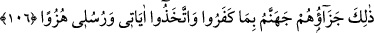

amelleri boşa giden kimselerdir ki, biz onlar için kıyâmet gününde hiçbir ölçü
tutmayacağız.
“İşte onlar,” iyi yaptıklarını zannetmekle birlikte gayretleri boşa çıkan bu kimseler,
“Rablerinin” aklen ve naklen tevhîde götüren “âyetlerini” delillerini “ve O’na
kavuşmayı” ba‘si (öldükten sonra dirilmeyi) ve onu takip eden âhiretle ilgili diğer
hususları “inkâr eden, bu yüzden” yaptıkları bu “amelleri boşa çıkan kimselerdir”
Amelleri tamamen yok olmuş ve onlardan sevap alamamışlardır “ki, biz onlar için
kıyâmet gününde” amelleri yok olmakla vasfedilen bu kimselere “hiçbir ölçü
tutmayacağız.” Yâni onlara her hangi bir değer vermeyeceğiz, hor ve hakir olarak
kalacaklar. Çünkü terâzi sâlih amelleri tartmak için kurulur. Onların sâlih amelleri
tamamen yok olmuştur.
Onların önemsenmeyip ihmal edilmesi, amellerinin yok olması sebebiyle olduğu için
burada teferruâta girilmek sûretiyle amellerinin boşa çıktığını bildiren cümleye
atfedildi. Küfrün cezâlarından olan onlar için terâzi kurulmamasına gelince, bu ileride
zikredilecektir.
Bir hadiste şöyle buyrulmuştur: “Çok yiyip içen uzun boylu biri getirilir. Bu
kimsenin terâzide sivrisineğin kanadı kadar bir ağırlığı yoktur.” Yanî âdiliğinden ve
küfründen dolayı bir değeri yoktur. Hadîsin sonu şöyledir: “İsterseniz şu âyeti okuyun:
Kıyâmet günü onlar için bir terâzî kurmayız.”[225] Yâni biz, onların amellerini ölçmek
için terâzi kurmayız. Çünkü terâzi; mü’minlerden hasenât ve seyyiât ehlinin tâat ve
mâsiyetlerini tartmak, keffâreti gerektiren ve gerektirmeyenleri belirlemek için kurulur.
Çünkü bu tevhid ehli için kemmiyet (yâni amellerin miktarı) açısındandır. Küfür ise
iyilikleri kemmiyet değil, keyfiyet açısından yok eder. Dolayısıyla onlar için mîzân
kurulmaz.
et-Te’vîlâtü’n-Necmiyye’de şöyle der: “Kıyâmet gününde şahısların ve amellerinin
tartılması, sıdk ve ihlâs bakımından olur. Kimin ihlâsı çoksa, tartısının ağırlığı da artar.
Kendisinde ve amelinde ihlâs yoksa, onun ve amelinin ölçü ve tartısı olmaz. Nitekim
Allah Teâlâ şöyle buyuruyor: “Onların yaptıkları her bir (iyi) işi ele alırız, onu
saçılmış zerreler haline getiririz (değersiz kılarız).” (el-Furkân, 25/23) Dolayısıyla
böyle hebâ olup dağılmış bir amel ne ölçülür, ne de kıymeti olur.”
106. İşte, inkâr ettikleri, âyetlerimi ve rasullerimi alaya aldıkları için onların
cezası cehennemdir.
“İşte” durum bundan ibârettir; “âyetlerimi ve rasullerimi alaya aldıkları için” yâni
küfürleri, âyetlerime ve peygamberlerime îman, onları ikrar ve tasdik etmeleri
gerekirken inkâra sapmaları, Kur’an’ı ve diğer ilâhî kitapları ve peygamberleri alaya